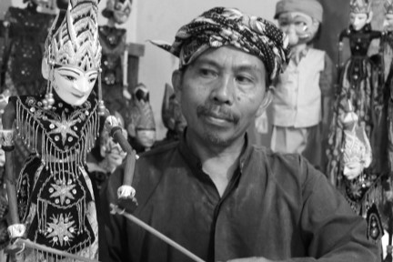

Entang Sutisna
Tokoh
Kemahirannya membuat wayang golek membuat Entang Sutisna begitu dikenal sebagai salah satu tokoh pembuat wayang golek dari Kota Bogor.
Menjadi lulusan sekolah rakyat tidak membuat kreatifitas sosok yang satu ini mentok begitu saja. 120 buah wayang, pesanan Alm. Mantan Presiden Soeharto dan Ibu Tien menjadi awal dimana keyakinan Entang Sutisna menggebu-gebu untuk fokus meneruskan hobinya sebagai pembuat wayang golek.
Ketertarikan saya pada wayang golek bermula saat menyaksikan pertunjukan wayang di sekitar rumah.
Sejak saat itu, Entang yang juga merupakan keturunan asli Bogor mengaku tidak pernah ketinggalan untuk menyaksikan setiap pertunjukan wayang yang sedang dipentaskan. Pembelajaran demi pembelajaran hingga pengenalan terhadap tokoh wayang merupakan cara yang ditempuh pensiunan Korem 061 Suryakencana ini untuk menyelami lebih dalam lagi dunia pewayangan.
Hobi pembawa berkah' begitulah penggalan kisah yang dapat diambil dari Bapak 4 orang anak ini. Bicara mengenai anak, rupanya Entang tak ingin menyia-nyiakan keahliannya untuk lenyap begitu saja seiring berjalannya waktu. Kemahiran mengukir kayu untuk diolah menjadi sosok tokoh pewayangan Entang turunkan kepada anak-anaknya. Endai, anak pertama Entang menjadi salah satu pewaris keahlian sang Ayah.
Dibantu Endai, sang anak, wayang golek buatan Entang pun mulai dijual dengan cara direct selling. Berbagai langkah dilakukan, mula dari berkeliling dan promosi ke setiap turis yang ditemui hingga meminta bantuan pemandu wisata untuk memperkenalkan wayang golek kepada setiap wisatawan asing. Perihal kualitas wayang golek buatannya, Entang tidak main-main. Ia rela menemukan bahan baku berkualitas demi hasil yang pantas dihargai.
Biasanya saya menggunakan kayu dari pohon puley sebagai bahan baku pembuatan wayang golek. Pohon puley termasuk jenis yang cukup mudah dan banyak ditemui di Bogor. Batang pohon puley cenderung lebih lunak dan mudah dibentuk. Kayu jenis ini juga terkenal ringan dan kuat.
Berbekal hasil karya yang hampir sempurna, kini wayang golek buatan Entang siap menjelajah dunia internasional. Pembeli yang sebagian berasal langsung dari negara Eropa seperti Jerman, Belanda, dan Belgia ini biasanya membeli dan datang langsung ke rumah Entang yang juga merupakan tempat produksi wayang golek. Entang sendiri dalam 1 bulan dapat memproduksi sekitar 40 wayang golek.
Kini, dalam proses produksi wayang, ia dibantu dengan 8 pekerjanya. Keluarga Entang pun telah memiliki bengkel wayang golek sendiri yang diberi nama Media Art & Handycraft. Bengkel wayang golek yang berlokasi di Jalan Sirnagalih No.58, Loji, Bogor ini, kini menjadi saksi dimana Maestro seni pembuatan wayang Indonesia lahir, tumbuh dan mampu mempertahankan eksistensinya.